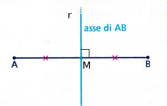
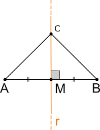

I luoghi geometrici
Definizione 1. Il luogo geometrico identifica l’insieme costituito da tutti e soli i punti dal piano (o dello spazio) che soddisfano una data proprietà Ƥ, detta proprietà caratteristica del luogo. □
Per esempio:
l’asse di un segmento è il luogo dei punti del piano equidistanti dagli estremi del segmento;
la bisettrice di un angolo è il luogo dei punti del piano equidistanti dai lati dell’angolo.
la circonferenza.
Per poter affermare che una figura è un luogo geometrico occorre dimostrare che
Tutti i punti godono della stessa proprietà caratteristica;
Solo i punti della figura godono di questa proprietà.
L'asse di un segmento
L’asse di un segmento è la retta perpendicolare al segmento stesso e passante per il suo punto medio. Consideriamo dunque un generico segmento AB ed il suo punto medio in M e rappresentiamo l’asse del segmento mediante una retta tratteggiata che forma con il segmento un angolo retto:
Vale il seguente teorema:
Teorema 2. L'asse di un segmento è il luogo geometrico dei punti equidistanti dagli estremi del segmento.
Proof. Occorre dimostrare che:
Tutti i punti dell'asse sono equidistanti dagli estremi. Dobbiamo dimostrare che, se un punto C appartiene all'asse r del segmento AB allora è equidistante da A e B. I triangoli rettangoli AMC e BMC hanno:
AM ≅ MB perché M è punto medio di AB;
MC in comune.
Sono perciò congruenti per il primo criterio di congruenza dei triangoli rettangoli.
In particolare, AC ≅ CB, quindi le distanze di C da A e B sono uguali.Solo i punti dell'asse sono equidistanti dagli estremi. Dobbiamo dimostrare che se un punto C è equidistante da A e B, allora appartiene all'asse del segmento AB. Dal punto C tracciamo la perpendicolare CH ad AB.
I triangoli rettangoli AHC e BHC hanno:AC ≅ CB perché C è equidistante da A e B;
HC in comune.
Sono perciò congruenti per il quarto criterio di congruenza dei triangoli rettangoli.
In particolare, AH ≅ HB.
La retta CH è perpendicolare al segmento AB e passa per il suo punto medio, quindi C appartiente all'asse di AB. □
La bisettrice di un angolo
Teorema. La bisettrice di un angolo è il luogo geometrico dei punti equidistanti dai lati dell'angolo.
Proof. Occorre dimostrare che:
Tutti i punti della bisettrice sono equidistanti dai lati. Dobbiamo dimostrare che, se un punto P appartiene alla bisettrice, allora è equidistante dai lati.
Individuiamo sui lati i punti Q e R tali che PQ e PR siano le distanze del punto P dai due lati.
I triangolo rettangoli PVQ e PVR hanno:PV in comune;
QV̂P ≌ PV̂R perché PV è «Epoxides Index Circonferenza»